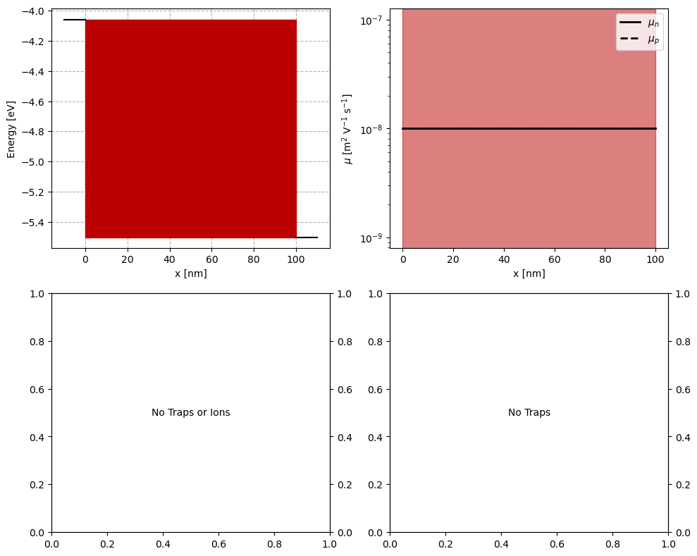
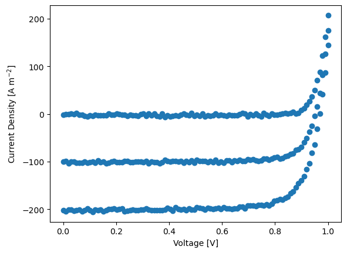
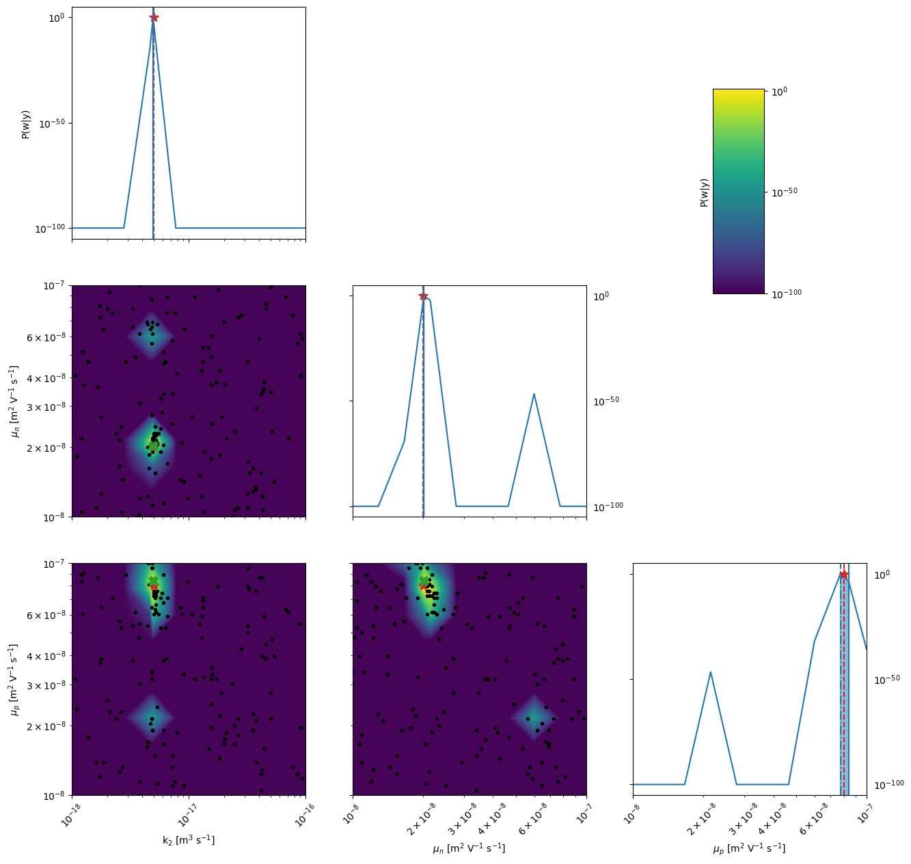
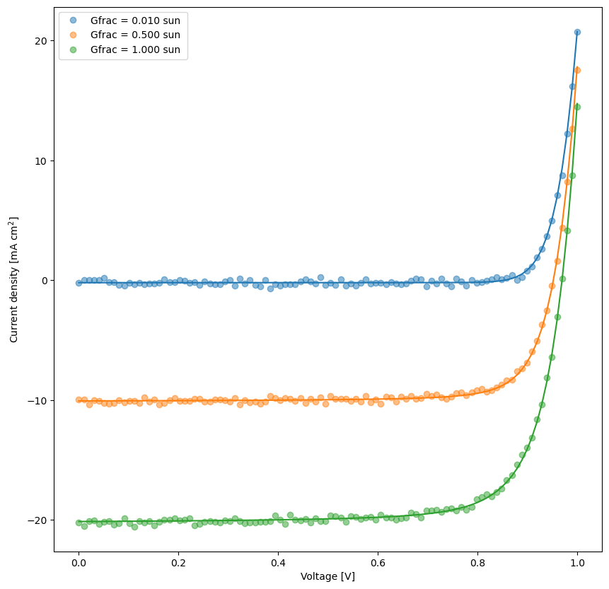
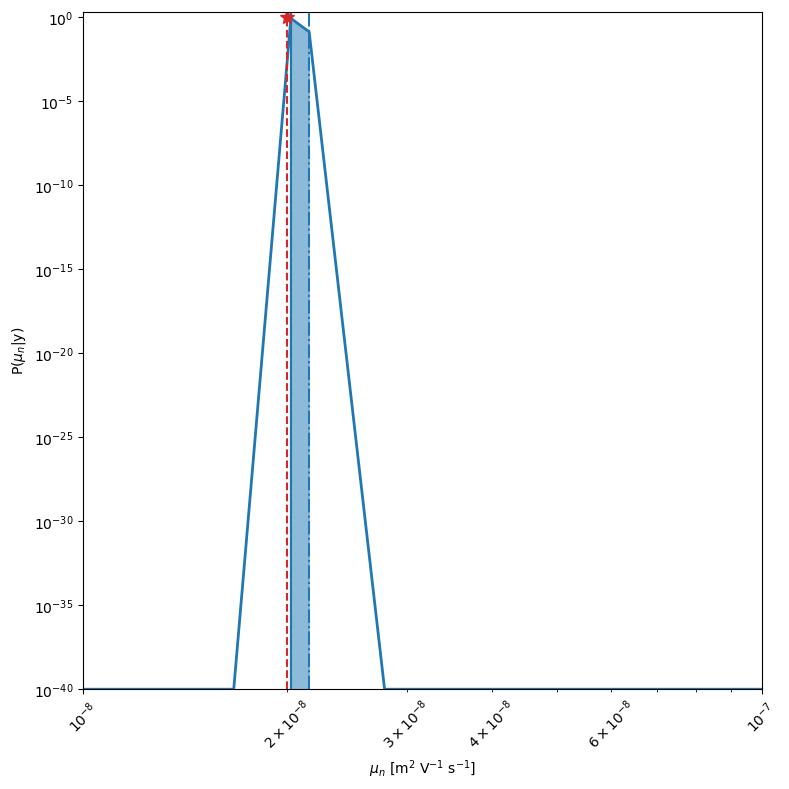
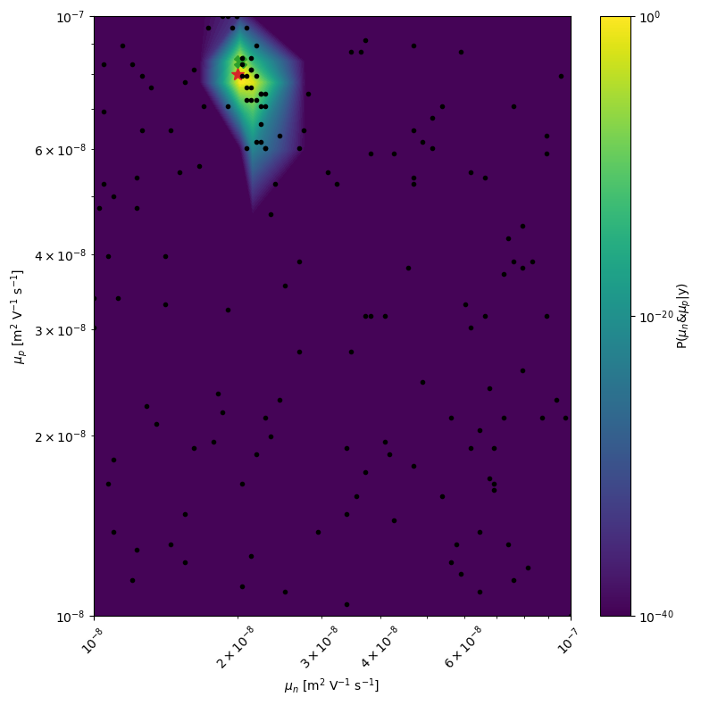

BOAR with SIMsalabim
Version 1.0.0 (c) Vincent M. Le Corre, Larry Lueer, i-MEET 2021-2023
This notebook is made to use BOAR in combination with drift-diffusion modeling to fit of ‘fake’ JV curves.
To perform the drift-diffusion simulation in the background we use the open-source program SIMsalabim, for more information about SIMsalabim please check the GitHub repository
Make sure you have SIMsalabim installed before running this Notebook.
Here we are fitting some ‘fake’ data that are generated by the drift-diffusion model.
[1]:
# Activate matplotlib widgets
# %matplotlib inline
# comment the next line if you are on the jupyterhub server
# %matplotlib widget
# %matplotlib notebook
# Import libraries
import sys,os
from numpy.random import default_rng
import warnings
warnings.filterwarnings('ignore') # comment this out to see warnings
# Import boar package
sys.path.append(os.path.abspath('../')) # add directory containing boar package to path
from boar import *
from boar.core.optimization_botorch import *
[2]:
# Define path to SIMsalabim
curr_dir = os.getcwd()
parent_dir = os.path.abspath(os.path.join(curr_dir, '..')) # path to the parent directory
path2simu = os.path.join(parent_dir, 'SIMsalabim','SimSS') # path to the SIMsalabim directory
# Directory where the results are stored
res_dir = os.path.join(curr_dir,'temp') # absolute path to the results directory (note that this will be delete in the last cell of this notebook)
dev_par_file = os.path.join(parent_dir,'Example_Data','Data_test','device_parameters_fake_OPV.txt') # absolute path to the device parameter file (here we use a fake OPV device for illustration purposes)
Define the free parameters to be optimized
[3]:
# define Fitparameters
True_params = {'kdirect':5e-18,'mun_0':2e-8,'mup_0':8e-8,'Nc':5e26,'Gehp':1.28e28,'W_L':0}#,'Rseries':3e-4,'Bulk_tr':1e20,'Gehp':1.28e28}
params = []
kdirect = Fitparam(name = 'kdirect', val = True_params['kdirect'] , relRange = 1.5, lims=[1e-18,1e-16],range_type='log',optim_type='log',display_name='k$_{2}$',unit='m$^{3}$ s$^{-1}$')
params.append(kdirect)
mun_0 = Fitparam(name = 'mun_0', val = True_params['mun_0'] , relRange = 1.5, lims=[1e-8,1e-7],range_type='log',optim_type='log',display_name='$\mu_n$',unit='m$^{2}$ V$^{-1}$ s$^{-1}$')
params.append(mun_0)
mup_0 = Fitparam(name = 'mup_0', val = True_params['mup_0'] , relRange = 1.5, lims=[1e-8,1e-7],range_type='log',optim_type='log',display_name='$\mu_p$',unit='m$^{2}$ V$^{-1}$ s$^{-1}$')
params.append(mup_0)
params_true = copy.deepcopy(params)
Check the structure of the device for SIMsalabim
Here we check the structure of the device for SIMsalabim and you can adjust the parameters if needed.
For example, if you want to change the thickness of the active layer (AL) you can do this by changing the value of the variable L in the cell below. To do so you need to update the value of the variable ParFileDic[‘L’] and set MakeUpdate to True.
By convention LTL is the ETL and RTL is the HTL.
Note that L is the total thickness of the ETL, HTL and active layer, so if you want to change the thickness of the active layer you need to subtract the thickness of the ETL and HTL from the total thickness. Such that:
\(L_{AL} = L - L_{LTL} - L_{RTL}\)
To check the name of the parameters in SIMsalabim please refer to the SIMsalabim documentation.
[4]:
# Vizualize the stack defined for the simulation
check_SIMsalabim_input = True
# from boar.SIMsalabim_utils.MakeDevParFile import *
# from boar.SIMsalabim_utils.GetInputPar import *
if check_SIMsalabim_input:
from boar.SIMsalabim_utils.PlotInputPar import *
# Load Device parameters file and update parameters
ParFileDic = ReadParameterFile(dev_par_file) # read the parameters from the file
# Change parameters in the dictionary
ParFileDic['L'] = 100e-9
MakeUpdate = False # set to True to update the parameters in the file
if MakeUpdate:
UpdateDevParFile(ParFileDic, path2simu) # update the parameters in the file
# Visualize the parameters
fig, axs = plt.subplots(2,2,figsize = (10,8))
plot_input_nrj_diag(ParFileDic,ax=axs[0, 0])
plot_input_mob(ParFileDic,ax=axs[0, 1])
plot_input_dens(ParFileDic,ax=axs[1, 0])
plot_input_SRH_lifetime(ParFileDic,ax=axs[1, 1],y_unit='ns',y2_unit='cm')
plt.tight_layout()
plt.show()

Prepare fake data for fitting
In the next block we create some fake data with some random noise and plot it.
[5]:
# # create some fake data
Nc = 1 # number of fake datasets
V = np.linspace(0,1,100) # voltage
Gfrac = np.asarray([0.01,0.5,1]) # Gfrac, i.e. light intensity
X_dimensions = ['Vext','Gfrac'] # dimensions of the X array
X = np.array([[x,y] for y in Gfrac for x in V ] ) # X array
Xplot = Gfrac # X array for plotting
# Generate the fake data to fit
degradation_run = True
True_paramsList = []
# define the degradation of kdirect
kvals = np.geomspace(5e-18,5e-17,Nc) # simulate degradation of kdirect
dda = Drift_diffusion_agent(path2simu=path2simu) # instantiate the agent
ys = []
True_vals = []
True_FOMs = []
for kval in kvals:
kdirect.val = kval
True_paramsList.append({'kdirect':kval})
True_params['kdirect'] = kval
# store the true values for plotting later
True_vals.append(True_params.copy())
y = dda.DriftDiffusion_relative(X,params,X_dimensions=X_dimensions, max_jobs=3,dev_par_fname=dev_par_file) # simulate the data
rng = default_rng()#
noise = rng.standard_normal(y.shape) * 1.9
#noise = noise * X[:,1] # try this: higher T - higher noise
y+=noise # add some noise
ys.append(y)
plt.plot(X[:,0],y,'o')
plt.xlabel('Voltage [V]')
plt.ylabel('Current Density [A m$^{-2}$]')
# save params list to be modified later to store true values
params_true = copy.deepcopy(params)

Start the optimization
[6]:
# Fit the datasets one by one
pf = [] # list to store the fit results
mo = MooBOtorch(params=params,parallel=True,res_dir=res_dir) # initialize the optimization objectMultiObjectiveOptimizer(params=params,res_dir=res_dir) # instantiate the optimizer
n_jobs = 4
n_jobs_init = 25
n_yscale=2
n_initial_points = 100
n_BO = 60
n_BO_warmstart = 60
for ii,y in enumerate(ys):
target = {'model':partial(dda.DriftDiffusion_relative,X_dimensions=X_dimensions,max_jobs=3,dev_par_fname=dev_par_file),'target_name':'JV','data':{'X':X,'y':y,
'X_dimensions':['Vext','Gfrac'],'X_units':['V','sun'],'y_dimension':'Current density','y_unit':r'$A/m²$'},'weight':1,'target_weight':1}
mo.targets = [target]
mo.params = params
mo.warmstart = 'collect_init' if ii==0 else 'recall'
# mo.warmstart = 'None'
mo.SaveOldXY2file = os.path.join(res_dir,'old_XY.json') # path to the file where old points are saved
mo.Path2OldXY = os.path.join(res_dir,'old_XY.json') # path to the file where old points are saved
kwargs = {'check_improvement':'relax','max_loop_no_improvement':10,'xtol':1e-3,'ftol':1e-3}#,'initial_point_generator':'LHS'}
kwargs_posterior = {'Nres':10,'gaussfilt':3,'logscale':True,'vmin':1e-100,'zoom':0,'min_prob':1e-40,'clear_axis':False,'True_values':True_vals[ii],'show_points':True,'savefig':False,'figname':'param_posterior'+str(ii),'full_grid':True,'randomize':False}
kwargs_plot_obj = {'zscale':'linear'}
# r = mo.optimize_sko_parallel(n_jobs=n_jobs,n_yscale=n_yscale, n_BO=n_BO, n_initial_points = n_initial_points,n_BO_warmstart=n_BO_warmstart,n_jobs_init=n_jobs_init,kwargs=kwargs,verbose=False,loss='soft_l1',threshold=1000,base_estimator = 'GP',show_objective_func=False,show_posterior=True,kwargs_posterior = kwargs_posterior,kwargs_plot_obj=kwargs_plot_obj,)
ax_client = mo.BoTorchOpti(n_jobs=[n_jobs_init,n_jobs], n_step_points = [n_initial_points, n_BO ], models=['Sobol','GPEI'],obj_type='MSE',loss='soft_l1',threshold=1,use_CUDA=True,is_MOO=False,verbose=True,show_posterior=True,kwargs_posterior=kwargs_posterior)
pf.append(deepcopy(mo.params)) # collects optimized fitparameters
# rrr = r['r'] # the results dict of the last optimizer.tell()
#get true parameters and make a params object
for param in params_true:
if param.name in True_paramsList[ii]:
param.val = True_paramsList[ii][param.name]
# plot the fit results
fit_results = []
kwargs_plot_res = {'x_scaling':1,'xaxis_label':'Voltage [V]','xscale_type':'linear','y_scaling':1/10,'yaxis_label':'Current density [mA cm$^2$]','yscale_type':'linear','norm_data':False,'delog':False,'figsize':(10,10),'savefig':False,'figname':'JV_fits_' + str(ii),'figdir':'temp'}
for num,t in enumerate(mo.targets):
kwargs_plot_res['figname'] = os.path.join(res_dir,t['target_name']+f'_fit_{num}')
dda.plot_fit_res(t,mo.params,'Vext',xlim=[],ylim=[],kwargs=kwargs_plot_res)
X = t['data']['X']
y = t['data']['y']
X_dimensions = t['data']['X_dimensions']
yfit = t['model'](X,mo.params,X_dimensions=X_dimensions) # get the best fits
data = np.concatenate((X, y.reshape(len(y),1), yfit.reshape(len(yfit),1)), axis=1)
fit_results.append(data)
# prepare the data for saving
param_dict = dda.get_param_dict(mo.params) # get fitparameters (and fixed ones) as dict
pout = [[f'{v:.3E}' if isinstance(v,float) else v for _,v in pp.items()] for pp in param_dict] # convert to list of lists
save_output = False
if save_output:
# produce output excel file with data, fitparameters and FOMs
fn_xlsx = 'fits_results.xlsx'
namecols = X_dimensions + ['Jexp','Jfit']
# delete old file if it exists
if os.path.exists(os.path.join(res_dir,fn_xlsx)):
os.remove(os.path.join(res_dir,fn_xlsx))
with pd.ExcelWriter(os.path.join(res_dir,fn_xlsx), mode='w') as writer:
for i,t in enumerate(mo.targets):
if 'target_name' in t.keys():
tname = t['target_name']
else:
tname = 'data'
namecols = X_dimensions + [tname+'_exp',tname+'_fit']
df = pd.DataFrame(fit_results[i],columns=namecols)
df.to_excel(writer, sheet_name = tname+f'_{i}')
df = pd.DataFrame(pout,columns=[k for k in param_dict[0].keys()])
df.to_excel(writer, sheet_name = f'params')
[INFO 02-22 16:16:11] ax.service.ax_client: Starting optimization with verbose logging. To disable logging, set the `verbose_logging` argument to `False`. Note that float values in the logs are rounded to 6 decimal points.
[INFO 02-22 16:16:11] ax.service.utils.instantiation: Created search space: SearchSpace(parameters=[RangeParameter(name='kdirect', parameter_type=FLOAT, range=[-18.0, -16.0]), RangeParameter(name='mun_0', parameter_type=FLOAT, range=[-8.0, -7.0]), RangeParameter(name='mup_0', parameter_type=FLOAT, range=[-8.0, -7.0])], parameter_constraints=[]).
[INFO 02-22 16:16:11] ax.service.ax_client: Generated new trial 0 with parameters {'kdirect': -16.382344, 'mun_0': -7.8101, 'mup_0': -7.90501}.
[INFO 02-22 16:16:11] ax.service.ax_client: Generated new trial 1 with parameters {'kdirect': -16.582192, 'mun_0': -7.960114, 'mup_0': -7.737169}.
[INFO 02-22 16:16:11] ax.service.ax_client: Generated new trial 2 with parameters {'kdirect': -17.573586, 'mun_0': -7.840695, 'mup_0': -7.88335}.
[INFO 02-22 16:16:11] ax.service.ax_client: Generated new trial 3 with parameters {'kdirect': -17.336018, 'mun_0': -7.788962, 'mup_0': -7.085882}.
[INFO 02-22 16:16:11] ax.service.ax_client: Generated new trial 4 with parameters {'kdirect': -17.122276, 'mun_0': -7.123826, 'mup_0': -7.940311}.
[INFO 02-22 16:16:11] ax.service.ax_client: Generated new trial 5 with parameters {'kdirect': -17.240643, 'mun_0': -7.492653, 'mup_0': -7.277736}.
[INFO 02-22 16:16:11] ax.service.ax_client: Generated new trial 6 with parameters {'kdirect': -17.477699, 'mun_0': -7.183533, 'mup_0': -7.265736}.
[INFO 02-22 16:16:11] ax.service.ax_client: Generated new trial 7 with parameters {'kdirect': -16.60961, 'mun_0': -7.966842, 'mup_0': -7.780209}.
[INFO 02-22 16:16:11] ax.service.ax_client: Generated new trial 8 with parameters {'kdirect': -17.319549, 'mun_0': -7.181183, 'mup_0': -7.499077}.
[INFO 02-22 16:16:11] ax.service.ax_client: Generated new trial 9 with parameters {'kdirect': -16.60764, 'mun_0': -7.626074, 'mup_0': -7.69784}.
[INFO 02-22 16:16:11] ax.service.ax_client: Generated new trial 10 with parameters {'kdirect': -17.589054, 'mun_0': -7.67241, 'mup_0': -7.89809}.
[INFO 02-22 16:16:11] ax.service.ax_client: Generated new trial 11 with parameters {'kdirect': -17.974817, 'mun_0': -7.390804, 'mup_0': -7.502443}.
[INFO 02-22 16:16:11] ax.service.ax_client: Generated new trial 12 with parameters {'kdirect': -16.96795, 'mun_0': -7.57006, 'mup_0': -7.223829}.
[INFO 02-22 16:16:11] ax.service.ax_client: Generated new trial 13 with parameters {'kdirect': -16.702446, 'mun_0': -7.156575, 'mup_0': -7.784837}.
[INFO 02-22 16:16:11] ax.service.ax_client: Generated new trial 14 with parameters {'kdirect': -16.432092, 'mun_0': -7.869515, 'mup_0': -7.676722}.
[INFO 02-22 16:16:11] ax.service.ax_client: Generated new trial 15 with parameters {'kdirect': -16.151351, 'mun_0': -7.663852, 'mup_0': -7.20611}.
[INFO 02-22 16:16:11] ax.service.ax_client: Generated new trial 16 with parameters {'kdirect': -17.69533, 'mun_0': -7.100279, 'mup_0': -7.585004}.
[INFO 02-22 16:16:11] ax.service.ax_client: Generated new trial 17 with parameters {'kdirect': -17.420969, 'mun_0': -7.207348, 'mup_0': -7.516094}.
[INFO 02-22 16:16:11] ax.service.ax_client: Generated new trial 18 with parameters {'kdirect': -17.008701, 'mun_0': -7.923931, 'mup_0': -7.077645}.
[INFO 02-22 16:16:11] ax.service.ax_client: Generated new trial 19 with parameters {'kdirect': -17.138915, 'mun_0': -7.469817, 'mup_0': -7.830334}.
[INFO 02-22 16:16:11] ax.service.ax_client: Generated new trial 20 with parameters {'kdirect': -16.266923, 'mun_0': -7.848161, 'mup_0': -7.40461}.
[INFO 02-22 16:16:11] ax.service.ax_client: Generated new trial 21 with parameters {'kdirect': -17.580115, 'mun_0': -7.611749, 'mup_0': -7.636178}.
[INFO 02-22 16:16:11] ax.service.ax_client: Generated new trial 22 with parameters {'kdirect': -16.888478, 'mun_0': -7.909214, 'mup_0': -7.320553}.
[INFO 02-22 16:16:11] ax.service.ax_client: Generated new trial 23 with parameters {'kdirect': -16.914884, 'mun_0': -7.822602, 'mup_0': -7.26216}.
[INFO 02-22 16:16:11] ax.service.ax_client: Generated new trial 24 with parameters {'kdirect': -16.489432, 'mun_0': -7.760156, 'mup_0': -7.017309}.
[INFO 02-22 16:16:16] ax.service.ax_client: Completed trial 0 with data: {'MSE': (78.136753, None)}.
[INFO 02-22 16:16:16] ax.service.ax_client: Completed trial 1 with data: {'MSE': (64.573804, None)}.
[INFO 02-22 16:16:16] ax.service.ax_client: Completed trial 2 with data: {'MSE': (32.879498, None)}.
[INFO 02-22 16:16:16] ax.service.ax_client: Completed trial 3 with data: {'MSE': (5.053966, None)}.
[INFO 02-22 16:16:16] ax.service.ax_client: Completed trial 4 with data: {'MSE': (18.972345, None)}.
[INFO 02-22 16:16:16] ax.service.ax_client: Completed trial 5 with data: {'MSE': (5.918228, None)}.
[INFO 02-22 16:16:16] ax.service.ax_client: Completed trial 6 with data: {'MSE': (15.484387, None)}.
[INFO 02-22 16:16:16] ax.service.ax_client: Completed trial 7 with data: {'MSE': (64.960116, None)}.
[INFO 02-22 16:16:16] ax.service.ax_client: Completed trial 8 with data: {'MSE': (7.494068, None)}.
[INFO 02-22 16:16:16] ax.service.ax_client: Completed trial 9 with data: {'MSE': (49.836548, None)}.
[INFO 02-22 16:16:16] ax.service.ax_client: Completed trial 10 with data: {'MSE': (30.835148, None)}.
[INFO 02-22 16:16:16] ax.service.ax_client: Completed trial 11 with data: {'MSE': (49.60842, None)}.
[INFO 02-22 16:16:16] ax.service.ax_client: Completed trial 12 with data: {'MSE': (27.266558, None)}.
[INFO 02-22 16:16:16] ax.service.ax_client: Completed trial 13 with data: {'MSE': (47.571194, None)}.
[INFO 02-22 16:16:16] ax.service.ax_client: Completed trial 14 with data: {'MSE': (68.0681, None)}.
[INFO 02-22 16:16:16] ax.service.ax_client: Completed trial 15 with data: {'MSE': (84.836961, None)}.
[INFO 02-22 16:16:16] ax.service.ax_client: Completed trial 16 with data: {'MSE': (26.231029, None)}.
[INFO 02-22 16:16:16] ax.service.ax_client: Completed trial 17 with data: {'MSE': (8.928671, None)}.
[INFO 02-22 16:16:16] ax.service.ax_client: Completed trial 18 with data: {'MSE': (24.384605, None)}.
[INFO 02-22 16:16:16] ax.service.ax_client: Completed trial 19 with data: {'MSE': (19.018268, None)}.
[INFO 02-22 16:16:16] ax.service.ax_client: Completed trial 20 with data: {'MSE': (72.064539, None)}.
[INFO 02-22 16:16:16] ax.service.ax_client: Completed trial 21 with data: {'MSE': (27.137553, None)}.
[INFO 02-22 16:16:16] ax.service.ax_client: Completed trial 22 with data: {'MSE': (32.37167, None)}.
[INFO 02-22 16:16:16] ax.service.ax_client: Completed trial 23 with data: {'MSE': (28.146624, None)}.
[INFO 02-22 16:16:16] ax.service.ax_client: Completed trial 24 with data: {'MSE': (70.004538, None)}.
[INFO 02-22 16:16:17] ax.service.ax_client: Generated new trial 25 with parameters {'kdirect': -17.589646, 'mun_0': -7.7793, 'mup_0': -7.254291}.
[INFO 02-22 16:16:17] ax.service.ax_client: Generated new trial 26 with parameters {'kdirect': -16.042168, 'mun_0': -7.385014, 'mup_0': -7.712917}.
[INFO 02-22 16:16:17] ax.service.ax_client: Generated new trial 27 with parameters {'kdirect': -17.224065, 'mun_0': -7.285295, 'mup_0': -7.165921}.
[INFO 02-22 16:16:17] ax.service.ax_client: Generated new trial 28 with parameters {'kdirect': -16.629445, 'mun_0': -7.996164, 'mup_0': -7.519184}.
[INFO 02-22 16:16:17] ax.service.ax_client: Generated new trial 29 with parameters {'kdirect': -16.870068, 'mun_0': -7.718245, 'mup_0': -7.488464}.
[INFO 02-22 16:16:17] ax.service.ax_client: Generated new trial 30 with parameters {'kdirect': -17.54224, 'mun_0': -7.326183, 'mup_0': -7.052687}.
[INFO 02-22 16:16:17] ax.service.ax_client: Generated new trial 31 with parameters {'kdirect': -16.878713, 'mun_0': -7.328623, 'mup_0': -7.185715}.
[INFO 02-22 16:16:17] ax.service.ax_client: Generated new trial 32 with parameters {'kdirect': -16.881998, 'mun_0': -7.274017, 'mup_0': -7.150691}.
[INFO 02-22 16:16:17] ax.service.ax_client: Generated new trial 33 with parameters {'kdirect': -17.307055, 'mun_0': -7.95429, 'mup_0': -7.471287}.
[INFO 02-22 16:16:17] ax.service.ax_client: Generated new trial 34 with parameters {'kdirect': -16.683775, 'mun_0': -7.663601, 'mup_0': -7.73209}.
[INFO 02-22 16:16:17] ax.service.ax_client: Generated new trial 35 with parameters {'kdirect': -17.064187, 'mun_0': -7.675985, 'mup_0': -7.218108}.
[INFO 02-22 16:16:17] ax.service.ax_client: Generated new trial 36 with parameters {'kdirect': -16.290942, 'mun_0': -7.627987, 'mup_0': -7.333589}.
[INFO 02-22 16:16:17] ax.service.ax_client: Generated new trial 37 with parameters {'kdirect': -17.855856, 'mun_0': -7.332683, 'mup_0': -7.751817}.
[INFO 02-22 16:16:17] ax.service.ax_client: Generated new trial 38 with parameters {'kdirect': -16.304436, 'mun_0': -7.009769, 'mup_0': -7.668737}.
[INFO 02-22 16:16:17] ax.service.ax_client: Generated new trial 39 with parameters {'kdirect': -16.796347, 'mun_0': -7.221505, 'mup_0': -7.484764}.
[INFO 02-22 16:16:17] ax.service.ax_client: Generated new trial 40 with parameters {'kdirect': -17.28654, 'mun_0': -7.810542, 'mup_0': -7.834433}.
[INFO 02-22 16:16:17] ax.service.ax_client: Generated new trial 41 with parameters {'kdirect': -16.547576, 'mun_0': -7.130395, 'mup_0': -7.374096}.
[INFO 02-22 16:16:17] ax.service.ax_client: Generated new trial 42 with parameters {'kdirect': -17.751417, 'mun_0': -7.572292, 'mup_0': -7.412386}.
[INFO 02-22 16:16:17] ax.service.ax_client: Generated new trial 43 with parameters {'kdirect': -17.139783, 'mun_0': -7.235544, 'mup_0': -7.884472}.
[INFO 02-22 16:16:17] ax.service.ax_client: Generated new trial 44 with parameters {'kdirect': -16.371048, 'mun_0': -7.974261, 'mup_0': -7.398158}.
[INFO 02-22 16:16:17] ax.service.ax_client: Generated new trial 45 with parameters {'kdirect': -16.434312, 'mun_0': -7.884739, 'mup_0': -7.116175}.
[INFO 02-22 16:16:17] ax.service.ax_client: Generated new trial 46 with parameters {'kdirect': -17.273867, 'mun_0': -7.686713, 'mup_0': -7.949368}.
[INFO 02-22 16:16:17] ax.service.ax_client: Generated new trial 47 with parameters {'kdirect': -16.754269, 'mun_0': -7.024543, 'mup_0': -7.095607}.
[INFO 02-22 16:16:17] ax.service.ax_client: Generated new trial 48 with parameters {'kdirect': -17.353278, 'mun_0': -7.910147, 'mup_0': -7.272666}.
[INFO 02-22 16:16:17] ax.service.ax_client: Generated new trial 49 with parameters {'kdirect': -17.580012, 'mun_0': -7.984149, 'mup_0': -7.283459}.
[INFO 02-22 16:16:19] ax.service.ax_client: Completed trial 25 with data: {'MSE': (25.293226, None)}.
[INFO 02-22 16:16:19] ax.service.ax_client: Completed trial 26 with data: {'MSE': (85.203242, None)}.
[INFO 02-22 16:16:19] ax.service.ax_client: Completed trial 27 with data: {'MSE': (22.30853, None)}.
[INFO 02-22 16:16:19] ax.service.ax_client: Completed trial 28 with data: {'MSE': (55.607733, None)}.
[INFO 02-22 16:16:19] ax.service.ax_client: Completed trial 29 with data: {'MSE': (30.482333, None)}.
[INFO 02-22 16:16:19] ax.service.ax_client: Completed trial 30 with data: {'MSE': (19.081582, None)}.
[INFO 02-22 16:16:19] ax.service.ax_client: Completed trial 31 with data: {'MSE': (51.69229, None)}.
[INFO 02-22 16:16:19] ax.service.ax_client: Completed trial 32 with data: {'MSE': (58.51053, None)}.
[INFO 02-22 16:16:19] ax.service.ax_client: Completed trial 33 with data: {'MSE': (22.394473, None)}.
[INFO 02-22 16:16:19] ax.service.ax_client: Completed trial 34 with data: {'MSE': (46.736112, None)}.
[INFO 02-22 16:16:19] ax.service.ax_client: Completed trial 35 with data: {'MSE': (16.675204, None)}.
[INFO 02-22 16:16:19] ax.service.ax_client: Completed trial 36 with data: {'MSE': (71.443121, None)}.
[INFO 02-22 16:16:19] ax.service.ax_client: Completed trial 37 with data: {'MSE': (40.602139, None)}.
[INFO 02-22 16:16:19] ax.service.ax_client: Completed trial 38 with data: {'MSE': (90.981735, None)}.
[INFO 02-22 16:16:19] ax.service.ax_client: Completed trial 39 with data: {'MSE': (47.360244, None)}.
[INFO 02-22 16:16:19] ax.service.ax_client: Completed trial 40 with data: {'MSE': (28.181543, None)}.
[INFO 02-22 16:16:19] ax.service.ax_client: Completed trial 41 with data: {'MSE': (83.940048, None)}.
[INFO 02-22 16:16:19] ax.service.ax_client: Completed trial 42 with data: {'MSE': (37.11292, None)}.
[INFO 02-22 16:16:19] ax.service.ax_client: Completed trial 43 with data: {'MSE': (16.161363, None)}.
[INFO 02-22 16:16:19] ax.service.ax_client: Completed trial 44 with data: {'MSE': (68.412026, None)}.
[INFO 02-22 16:16:19] ax.service.ax_client: Completed trial 45 with data: {'MSE': (65.626612, None)}.
[INFO 02-22 16:16:19] ax.service.ax_client: Completed trial 46 with data: {'MSE': (28.511032, None)}.
[INFO 02-22 16:16:19] ax.service.ax_client: Completed trial 47 with data: {'MSE': (106.011284, None)}.
[INFO 02-22 16:16:19] ax.service.ax_client: Completed trial 48 with data: {'MSE': (15.628047, None)}.
[INFO 02-22 16:16:19] ax.service.ax_client: Completed trial 49 with data: {'MSE': (27.149846, None)}.
[INFO 02-22 16:16:19] ax.service.ax_client: Generated new trial 50 with parameters {'kdirect': -16.29588, 'mun_0': -7.456246, 'mup_0': -7.562744}.
[INFO 02-22 16:16:19] ax.service.ax_client: Generated new trial 51 with parameters {'kdirect': -16.892095, 'mun_0': -7.366069, 'mup_0': -7.233609}.
[INFO 02-22 16:16:19] ax.service.ax_client: Generated new trial 52 with parameters {'kdirect': -16.358488, 'mun_0': -7.44755, 'mup_0': -7.803868}.
[INFO 02-22 16:16:19] ax.service.ax_client: Generated new trial 53 with parameters {'kdirect': -17.730097, 'mun_0': -7.191808, 'mup_0': -7.861204}.
[INFO 02-22 16:16:19] ax.service.ax_client: Generated new trial 54 with parameters {'kdirect': -16.833347, 'mun_0': -7.268128, 'mup_0': -7.800979}.
[INFO 02-22 16:16:19] ax.service.ax_client: Generated new trial 55 with parameters {'kdirect': -17.647806, 'mun_0': -7.121736, 'mup_0': -7.153317}.
[INFO 02-22 16:16:19] ax.service.ax_client: Generated new trial 56 with parameters {'kdirect': -17.792573, 'mun_0': -7.961703, 'mup_0': -7.859637}.
[INFO 02-22 16:16:19] ax.service.ax_client: Generated new trial 57 with parameters {'kdirect': -16.94559, 'mun_0': -7.046527, 'mup_0': -7.503135}.
[INFO 02-22 16:16:19] ax.service.ax_client: Generated new trial 58 with parameters {'kdirect': -16.803415, 'mun_0': -7.601498, 'mup_0': -7.454293}.
[INFO 02-22 16:16:19] ax.service.ax_client: Generated new trial 59 with parameters {'kdirect': -16.373189, 'mun_0': -7.909667, 'mup_0': -7.895}.
[INFO 02-22 16:16:19] ax.service.ax_client: Generated new trial 60 with parameters {'kdirect': -17.481871, 'mun_0': -7.101241, 'mup_0': -7.417931}.
[INFO 02-22 16:16:19] ax.service.ax_client: Generated new trial 61 with parameters {'kdirect': -17.919101, 'mun_0': -7.664685, 'mup_0': -7.051988}.
[INFO 02-22 16:16:20] ax.service.ax_client: Generated new trial 62 with parameters {'kdirect': -17.038347, 'mun_0': -7.19244, 'mup_0': -7.960555}.
[INFO 02-22 16:16:20] ax.service.ax_client: Generated new trial 63 with parameters {'kdirect': -16.805292, 'mun_0': -7.751452, 'mup_0': -7.708736}.
[INFO 02-22 16:16:20] ax.service.ax_client: Generated new trial 64 with parameters {'kdirect': -17.065645, 'mun_0': -7.836211, 'mup_0': -7.189995}.
[INFO 02-22 16:16:20] ax.service.ax_client: Generated new trial 65 with parameters {'kdirect': -16.501973, 'mun_0': -7.32518, 'mup_0': -7.265851}.
[INFO 02-22 16:16:20] ax.service.ax_client: Generated new trial 66 with parameters {'kdirect': -16.688669, 'mun_0': -7.4287, 'mup_0': -7.761063}.
[INFO 02-22 16:16:20] ax.service.ax_client: Generated new trial 67 with parameters {'kdirect': -17.140459, 'mun_0': -7.596996, 'mup_0': -7.961125}.
[INFO 02-22 16:16:20] ax.service.ax_client: Generated new trial 68 with parameters {'kdirect': -17.193583, 'mun_0': -7.116824, 'mup_0': -7.406301}.
[INFO 02-22 16:16:20] ax.service.ax_client: Generated new trial 69 with parameters {'kdirect': -16.072367, 'mun_0': -7.25188, 'mup_0': -7.910581}.
[INFO 02-22 16:16:20] ax.service.ax_client: Generated new trial 70 with parameters {'kdirect': -16.724536, 'mun_0': -7.571164, 'mup_0': -7.556744}.
[INFO 02-22 16:16:20] ax.service.ax_client: Generated new trial 71 with parameters {'kdirect': -16.497607, 'mun_0': -7.90165, 'mup_0': -7.097264}.
[INFO 02-22 16:16:20] ax.service.ax_client: Generated new trial 72 with parameters {'kdirect': -16.340732, 'mun_0': -7.098955, 'mup_0': -7.351907}.
[INFO 02-22 16:16:20] ax.service.ax_client: Generated new trial 73 with parameters {'kdirect': -17.898886, 'mun_0': -7.427886, 'mup_0': -7.044374}.
[INFO 02-22 16:16:20] ax.service.ax_client: Generated new trial 74 with parameters {'kdirect': -16.805741, 'mun_0': -7.430558, 'mup_0': -7.499296}.
[INFO 02-22 16:16:22] ax.service.ax_client: Completed trial 50 with data: {'MSE': (69.268103, None)}.
[INFO 02-22 16:16:22] ax.service.ax_client: Completed trial 51 with data: {'MSE': (44.415331, None)}.
[INFO 02-22 16:16:22] ax.service.ax_client: Completed trial 52 with data: {'MSE': (65.964414, None)}.
[INFO 02-22 16:16:22] ax.service.ax_client: Completed trial 53 with data: {'MSE': (28.95929, None)}.
[INFO 02-22 16:16:22] ax.service.ax_client: Completed trial 54 with data: {'MSE': (34.866315, None)}.
[INFO 02-22 16:16:22] ax.service.ax_client: Completed trial 55 with data: {'MSE': (24.936774, None)}.
[INFO 02-22 16:16:22] ax.service.ax_client: Completed trial 56 with data: {'MSE': (41.427906, None)}.
[INFO 02-22 16:16:22] ax.service.ax_client: Completed trial 57 with data: {'MSE': (45.782839, None)}.
[INFO 02-22 16:16:22] ax.service.ax_client: Completed trial 58 with data: {'MSE': (33.937659, None)}.
[INFO 02-22 16:16:22] ax.service.ax_client: Completed trial 59 with data: {'MSE': (82.774277, None)}.
[INFO 02-22 16:16:22] ax.service.ax_client: Completed trial 60 with data: {'MSE': (13.846709, None)}.
[INFO 02-22 16:16:22] ax.service.ax_client: Completed trial 61 with data: {'MSE': (44.473698, None)}.
[INFO 02-22 16:16:22] ax.service.ax_client: Completed trial 62 with data: {'MSE': (24.854268, None)}.
[INFO 02-22 16:16:22] ax.service.ax_client: Completed trial 63 with data: {'MSE': (41.132272, None)}.
[INFO 02-22 16:16:22] ax.service.ax_client: Completed trial 64 with data: {'MSE': (17.923217, None)}.
[INFO 02-22 16:16:22] ax.service.ax_client: Completed trial 65 with data: {'MSE': (78.213024, None)}.
[INFO 02-22 16:16:22] ax.service.ax_client: Completed trial 66 with data: {'MSE': (43.392443, None)}.
[INFO 02-22 16:16:22] ax.service.ax_client: Completed trial 67 with data: {'MSE': (29.436057, None)}.
[INFO 02-22 16:16:22] ax.service.ax_client: Completed trial 68 with data: {'MSE': (23.185422, None)}.
[INFO 02-22 16:16:22] ax.service.ax_client: Completed trial 69 with data: {'MSE': (85.943136, None)}.
[INFO 02-22 16:16:22] ax.service.ax_client: Completed trial 70 with data: {'MSE': (39.336888, None)}.
[INFO 02-22 16:16:22] ax.service.ax_client: Completed trial 71 with data: {'MSE': (61.735593, None)}.
[INFO 02-22 16:16:22] ax.service.ax_client: Completed trial 72 with data: {'MSE': (106.010028, None)}.
[INFO 02-22 16:16:22] ax.service.ax_client: Completed trial 73 with data: {'MSE': (43.07671, None)}.
[INFO 02-22 16:16:22] ax.service.ax_client: Completed trial 74 with data: {'MSE': (35.922755, None)}.
[INFO 02-22 16:16:22] ax.service.ax_client: Generated new trial 75 with parameters {'kdirect': -17.223871, 'mun_0': -7.938981, 'mup_0': -7.050446}.
[INFO 02-22 16:16:22] ax.service.ax_client: Generated new trial 76 with parameters {'kdirect': -16.482435, 'mun_0': -7.80771, 'mup_0': -7.109402}.
[INFO 02-22 16:16:22] ax.service.ax_client: Generated new trial 77 with parameters {'kdirect': -16.743957, 'mun_0': -7.72914, 'mup_0': -7.659262}.
[INFO 02-22 16:16:22] ax.service.ax_client: Generated new trial 78 with parameters {'kdirect': -17.96141, 'mun_0': -7.737973, 'mup_0': -7.629978}.
[INFO 02-22 16:16:22] ax.service.ax_client: Generated new trial 79 with parameters {'kdirect': -16.774905, 'mun_0': -7.415416, 'mup_0': -7.496745}.
[INFO 02-22 16:16:22] ax.service.ax_client: Generated new trial 80 with parameters {'kdirect': -16.335195, 'mun_0': -7.083749, 'mup_0': -7.410472}.
[INFO 02-22 16:16:22] ax.service.ax_client: Generated new trial 81 with parameters {'kdirect': -16.37026, 'mun_0': -7.461003, 'mup_0': -7.056461}.
[INFO 02-22 16:16:22] ax.service.ax_client: Generated new trial 82 with parameters {'kdirect': -17.221347, 'mun_0': -7.466231, 'mup_0': -7.718997}.
[INFO 02-22 16:16:22] ax.service.ax_client: Generated new trial 83 with parameters {'kdirect': -17.204181, 'mun_0': -7.328133, 'mup_0': -7.280676}.
[INFO 02-22 16:16:22] ax.service.ax_client: Generated new trial 84 with parameters {'kdirect': -17.761302, 'mun_0': -7.08875, 'mup_0': -7.922258}.
[INFO 02-22 16:16:22] ax.service.ax_client: Generated new trial 85 with parameters {'kdirect': -16.401935, 'mun_0': -7.23449, 'mup_0': -7.062846}.
[INFO 02-22 16:16:22] ax.service.ax_client: Generated new trial 86 with parameters {'kdirect': -17.266695, 'mun_0': -7.167717, 'mup_0': -7.618385}.
[INFO 02-22 16:16:22] ax.service.ax_client: Generated new trial 87 with parameters {'kdirect': -17.760927, 'mun_0': -7.140538, 'mup_0': -7.430462}.
[INFO 02-22 16:16:22] ax.service.ax_client: Generated new trial 88 with parameters {'kdirect': -16.577568, 'mun_0': -7.136194, 'mup_0': -7.67102}.
[INFO 02-22 16:16:22] ax.service.ax_client: Generated new trial 89 with parameters {'kdirect': -17.417342, 'mun_0': -7.513506, 'mup_0': -7.262779}.
[INFO 02-22 16:16:22] ax.service.ax_client: Generated new trial 90 with parameters {'kdirect': -16.03439, 'mun_0': -7.227147, 'mup_0': -7.926782}.
[INFO 02-22 16:16:22] ax.service.ax_client: Generated new trial 91 with parameters {'kdirect': -17.748861, 'mun_0': -7.895509, 'mup_0': -7.194456}.
[INFO 02-22 16:16:22] ax.service.ax_client: Generated new trial 92 with parameters {'kdirect': -16.172718, 'mun_0': -7.051312, 'mup_0': -7.195488}.
[INFO 02-22 16:16:22] ax.service.ax_client: Generated new trial 93 with parameters {'kdirect': -16.501649, 'mun_0': -7.963868, 'mup_0': -7.296412}.
[INFO 02-22 16:16:22] ax.service.ax_client: Generated new trial 94 with parameters {'kdirect': -16.422804, 'mun_0': -7.53408, 'mup_0': -7.864917}.
[INFO 02-22 16:16:22] ax.service.ax_client: Generated new trial 95 with parameters {'kdirect': -17.916463, 'mun_0': -7.981058, 'mup_0': -7.07801}.
[INFO 02-22 16:16:23] ax.service.ax_client: Generated new trial 96 with parameters {'kdirect': -17.178239, 'mun_0': -7.045205, 'mup_0': -7.226759}.
[INFO 02-22 16:16:23] ax.service.ax_client: Generated new trial 97 with parameters {'kdirect': -16.884179, 'mun_0': -7.979004, 'mup_0': -7.160477}.
[INFO 02-22 16:16:23] ax.service.ax_client: Generated new trial 98 with parameters {'kdirect': -17.318383, 'mun_0': -7.055243, 'mup_0': -7.671102}.
[INFO 02-22 16:16:23] ax.service.ax_client: Generated new trial 99 with parameters {'kdirect': -17.461135, 'mun_0': -7.31219, 'mup_0': -7.207422}.
[INFO 02-22 16:16:25] ax.service.ax_client: Completed trial 75 with data: {'MSE': (11.961122, None)}.
[INFO 02-22 16:16:25] ax.service.ax_client: Completed trial 76 with data: {'MSE': (63.67625, None)}.
[INFO 02-22 16:16:25] ax.service.ax_client: Completed trial 77 with data: {'MSE': (42.617571, None)}.
[INFO 02-22 16:16:25] ax.service.ax_client: Completed trial 78 with data: {'MSE': (49.981228, None)}.
[INFO 02-22 16:16:25] ax.service.ax_client: Completed trial 79 with data: {'MSE': (38.794883, None)}.
[INFO 02-22 16:16:25] ax.service.ax_client: Completed trial 80 with data: {'MSE': (102.031229, None)}.
[INFO 02-22 16:16:25] ax.service.ax_client: Completed trial 81 with data: {'MSE': (96.462742, None)}.
[INFO 02-22 16:16:25] ax.service.ax_client: Completed trial 82 with data: {'MSE': (11.657049, None)}.
[INFO 02-22 16:16:25] ax.service.ax_client: Completed trial 83 with data: {'MSE': (16.064165, None)}.
[INFO 02-22 16:16:25] ax.service.ax_client: Completed trial 84 with data: {'MSE': (27.207989, None)}.
[INFO 02-22 16:16:25] ax.service.ax_client: Completed trial 85 with data: {'MSE': (120.027152, None)}.
[INFO 02-22 16:16:25] ax.service.ax_client: Completed trial 86 with data: {'MSE': (6.019374, None)}.
[INFO 02-22 16:16:25] ax.service.ax_client: Completed trial 87 with data: {'MSE': (32.454329, None)}.
[INFO 02-22 16:16:25] ax.service.ax_client: Completed trial 88 with data: {'MSE': (61.019365, None)}.
[INFO 02-22 16:16:25] ax.service.ax_client: Completed trial 89 with data: {'MSE': (10.406479, None)}.
[INFO 02-22 16:16:25] ax.service.ax_client: Completed trial 90 with data: {'MSE': (88.725823, None)}.
[INFO 02-22 16:16:25] ax.service.ax_client: Completed trial 91 with data: {'MSE': (34.9179, None)}.
[INFO 02-22 16:16:25] ax.service.ax_client: Completed trial 92 with data: {'MSE': (146.892663, None)}.
[INFO 02-22 16:16:25] ax.service.ax_client: Completed trial 93 with data: {'MSE': (58.8729, None)}.
[INFO 02-22 16:16:25] ax.service.ax_client: Completed trial 94 with data: {'MSE': (64.595854, None)}.
[INFO 02-22 16:16:25] ax.service.ax_client: Completed trial 95 with data: {'MSE': (42.1357, None)}.
[INFO 02-22 16:16:25] ax.service.ax_client: Completed trial 96 with data: {'MSE': (39.431954, None)}.
[INFO 02-22 16:16:25] ax.service.ax_client: Completed trial 97 with data: {'MSE': (34.006819, None)}.
[INFO 02-22 16:16:25] ax.service.ax_client: Completed trial 98 with data: {'MSE': (6.299344, None)}.
[INFO 02-22 16:16:25] ax.service.ax_client: Completed trial 99 with data: {'MSE': (14.143299, None)}.
[INFO 02-22 16:16:28] ax.service.ax_client: Generated new trial 100 with parameters {'kdirect': -17.320508, 'mun_0': -7.714038, 'mup_0': -7.021852}.
[INFO 02-22 16:16:28] ax.modelbridge.torch: The observations are identical to the last set of observations used to fit the model. Skipping model fitting.
[INFO 02-22 16:16:29] ax.service.ax_client: Generated new trial 101 with parameters {'kdirect': -17.29621, 'mun_0': -7.672272, 'mup_0': -7.124427}.
[INFO 02-22 16:16:29] ax.modelbridge.torch: The observations are identical to the last set of observations used to fit the model. Skipping model fitting.
[INFO 02-22 16:16:30] ax.service.ax_client: Generated new trial 102 with parameters {'kdirect': -17.339215, 'mun_0': -7.734462, 'mup_0': -7.0}.
[INFO 02-22 16:16:30] ax.modelbridge.torch: The observations are identical to the last set of observations used to fit the model. Skipping model fitting.
[INFO 02-22 16:16:33] ax.service.ax_client: Generated new trial 103 with parameters {'kdirect': -17.326614, 'mun_0': -7.191712, 'mup_0': -7.685947}.
[INFO 02-22 16:16:38] ax.service.ax_client: Completed trial 100 with data: {'MSE': (2.412415, None)}.
[INFO 02-22 16:16:38] ax.service.ax_client: Completed trial 101 with data: {'MSE': (2.330508, None)}.
[INFO 02-22 16:16:38] ax.service.ax_client: Completed trial 102 with data: {'MSE': (2.59937, None)}.
[INFO 02-22 16:16:38] ax.service.ax_client: Completed trial 103 with data: {'MSE': (2.525677, None)}.
[INFO 02-22 16:16:39] ax.service.ax_client: Generated new trial 104 with parameters {'kdirect': -17.306323, 'mun_0': -7.680541, 'mup_0': -7.023796}.
[INFO 02-22 16:16:39] ax.modelbridge.torch: The observations are identical to the last set of observations used to fit the model. Skipping model fitting.
[INFO 02-22 16:16:39] ax.service.ax_client: Generated new trial 105 with parameters {'kdirect': -17.420344, 'mun_0': -7.0, 'mup_0': -8.0}.
[INFO 02-22 16:16:39] ax.modelbridge.torch: The observations are identical to the last set of observations used to fit the model. Skipping model fitting.
[INFO 02-22 16:16:40] ax.service.ax_client: Generated new trial 106 with parameters {'kdirect': -17.350767, 'mun_0': -7.167498, 'mup_0': -7.771437}.
[INFO 02-22 16:16:40] ax.modelbridge.torch: The observations are identical to the last set of observations used to fit the model. Skipping model fitting.
[INFO 02-22 16:16:43] ax.service.ax_client: Generated new trial 107 with parameters {'kdirect': -17.356931, 'mun_0': -7.156899, 'mup_0': -7.793159}.
[INFO 02-22 16:16:43] ax.service.ax_client: Completed trial 104 with data: {'MSE': (3.302949, None)}.
[INFO 02-22 16:16:43] ax.service.ax_client: Completed trial 105 with data: {'MSE': (8.592821, None)}.
[INFO 02-22 16:16:43] ax.service.ax_client: Completed trial 106 with data: {'MSE': (4.02507, None)}.
[INFO 02-22 16:16:43] ax.service.ax_client: Completed trial 107 with data: {'MSE': (4.485396, None)}.
[INFO 02-22 16:16:44] ax.service.ax_client: Generated new trial 108 with parameters {'kdirect': -17.313411, 'mun_0': -7.673738, 'mup_0': -7.071623}.
[INFO 02-22 16:16:44] ax.modelbridge.torch: The observations are identical to the last set of observations used to fit the model. Skipping model fitting.
[INFO 02-22 16:16:45] ax.service.ax_client: Generated new trial 109 with parameters {'kdirect': -17.311821, 'mun_0': -7.717203, 'mup_0': -7.0}.
[INFO 02-22 16:16:45] ax.modelbridge.torch: The observations are identical to the last set of observations used to fit the model. Skipping model fitting.
[INFO 02-22 16:16:46] ax.service.ax_client: Generated new trial 110 with parameters {'kdirect': -17.33751, 'mun_0': -7.695773, 'mup_0': -7.0}.
[INFO 02-22 16:16:46] ax.modelbridge.torch: The observations are identical to the last set of observations used to fit the model. Skipping model fitting.
[INFO 02-22 16:16:47] ax.service.ax_client: Generated new trial 111 with parameters {'kdirect': -17.29136, 'mun_0': -7.654366, 'mup_0': -7.127428}.
[INFO 02-22 16:16:47] ax.service.ax_client: Completed trial 108 with data: {'MSE': (2.642586, None)}.
[INFO 02-22 16:16:47] ax.service.ax_client: Completed trial 109 with data: {'MSE': (2.687816, None)}.
[INFO 02-22 16:16:47] ax.service.ax_client: Completed trial 110 with data: {'MSE': (3.093481, None)}.
[INFO 02-22 16:16:47] ax.service.ax_client: Completed trial 111 with data: {'MSE': (2.53719, None)}.
[INFO 02-22 16:16:48] ax.service.ax_client: Generated new trial 112 with parameters {'kdirect': -17.296559, 'mun_0': -7.690117, 'mup_0': -7.072638}.
[INFO 02-22 16:16:48] ax.modelbridge.torch: The observations are identical to the last set of observations used to fit the model. Skipping model fitting.
[INFO 02-22 16:16:48] ax.service.ax_client: Generated new trial 113 with parameters {'kdirect': -17.322994, 'mun_0': -7.246584, 'mup_0': -7.674354}.
[INFO 02-22 16:16:48] ax.modelbridge.torch: The observations are identical to the last set of observations used to fit the model. Skipping model fitting.
[INFO 02-22 16:16:49] ax.service.ax_client: Generated new trial 114 with parameters {'kdirect': -17.308992, 'mun_0': -7.162452, 'mup_0': -7.720845}.
[INFO 02-22 16:16:49] ax.modelbridge.torch: The observations are identical to the last set of observations used to fit the model. Skipping model fitting.
[INFO 02-22 16:16:49] ax.service.ax_client: Generated new trial 115 with parameters {'kdirect': -17.301713, 'mun_0': -7.672754, 'mup_0': -7.09233}.
[INFO 02-22 16:16:50] ax.service.ax_client: Completed trial 112 with data: {'MSE': (2.472583, None)}.
[INFO 02-22 16:16:50] ax.service.ax_client: Completed trial 113 with data: {'MSE': (3.312617, None)}.
[INFO 02-22 16:16:50] ax.service.ax_client: Completed trial 114 with data: {'MSE': (2.626688, None)}.
[INFO 02-22 16:16:50] ax.service.ax_client: Completed trial 115 with data: {'MSE': (2.475589, None)}.
[INFO 02-22 16:16:50] ax.service.ax_client: Generated new trial 116 with parameters {'kdirect': -16.74175, 'mun_0': -7.366838, 'mup_0': -7.841796}.
[INFO 02-22 16:16:50] ax.modelbridge.torch: The observations are identical to the last set of observations used to fit the model. Skipping model fitting.
[INFO 02-22 16:16:50] ax.service.ax_client: Generated new trial 117 with parameters {'kdirect': -17.310108, 'mun_0': -7.209921, 'mup_0': -7.719458}.
[INFO 02-22 16:16:51] ax.modelbridge.torch: The observations are identical to the last set of observations used to fit the model. Skipping model fitting.
[INFO 02-22 16:16:51] ax.service.ax_client: Generated new trial 118 with parameters {'kdirect': -17.283656, 'mun_0': -7.64893, 'mup_0': -7.175765}.
[INFO 02-22 16:16:51] ax.modelbridge.torch: The observations are identical to the last set of observations used to fit the model. Skipping model fitting.
[INFO 02-22 16:16:51] ax.service.ax_client: Generated new trial 119 with parameters {'kdirect': -17.288488, 'mun_0': -7.670751, 'mup_0': -7.092674}.
[INFO 02-22 16:16:51] ax.service.ax_client: Completed trial 116 with data: {'MSE': (41.186331, None)}.
[INFO 02-22 16:16:51] ax.service.ax_client: Completed trial 117 with data: {'MSE': (3.130067, None)}.
[INFO 02-22 16:16:51] ax.service.ax_client: Completed trial 118 with data: {'MSE': (2.429657, None)}.
[INFO 02-22 16:16:51] ax.service.ax_client: Completed trial 119 with data: {'MSE': (2.735158, None)}.
[INFO 02-22 16:16:52] ax.service.ax_client: Generated new trial 120 with parameters {'kdirect': -16.045996, 'mun_0': -7.210566, 'mup_0': -7.262861}.
[INFO 02-22 16:16:52] ax.modelbridge.torch: The observations are identical to the last set of observations used to fit the model. Skipping model fitting.
[INFO 02-22 16:16:53] ax.service.ax_client: Generated new trial 121 with parameters {'kdirect': -17.300814, 'mun_0': -7.649399, 'mup_0': -7.134189}.
[INFO 02-22 16:16:53] ax.modelbridge.torch: The observations are identical to the last set of observations used to fit the model. Skipping model fitting.
[INFO 02-22 16:16:53] ax.service.ax_client: Generated new trial 122 with parameters {'kdirect': -17.27807, 'mun_0': -7.65181, 'mup_0': -7.213687}.
[INFO 02-22 16:16:53] ax.modelbridge.torch: The observations are identical to the last set of observations used to fit the model. Skipping model fitting.
[INFO 02-22 16:16:53] ax.service.ax_client: Generated new trial 123 with parameters {'kdirect': -17.313941, 'mun_0': -7.664192, 'mup_0': -7.101624}.
[INFO 02-22 16:16:54] ax.service.ax_client: Completed trial 120 with data: {'MSE': (121.033348, None)}.
[INFO 02-22 16:16:54] ax.service.ax_client: Completed trial 121 with data: {'MSE': (2.527876, None)}.
[INFO 02-22 16:16:54] ax.service.ax_client: Completed trial 122 with data: {'MSE': (2.668718, None)}.
[INFO 02-22 16:16:54] ax.service.ax_client: Completed trial 123 with data: {'MSE': (2.620257, None)}.
[INFO 02-22 16:16:55] ax.service.ax_client: Generated new trial 124 with parameters {'kdirect': -17.422484, 'mun_0': -7.919485, 'mup_0': -7.938298}.
[INFO 02-22 16:16:55] ax.modelbridge.torch: The observations are identical to the last set of observations used to fit the model. Skipping model fitting.
[INFO 02-22 16:16:55] ax.service.ax_client: Generated new trial 125 with parameters {'kdirect': -17.906755, 'mun_0': -7.290311, 'mup_0': -7.217357}.
[INFO 02-22 16:16:55] ax.modelbridge.torch: The observations are identical to the last set of observations used to fit the model. Skipping model fitting.
[INFO 02-22 16:16:55] ax.service.ax_client: Generated new trial 126 with parameters {'kdirect': -16.446998, 'mun_0': -7.887731, 'mup_0': -7.649353}.
[INFO 02-22 16:16:55] ax.modelbridge.torch: The observations are identical to the last set of observations used to fit the model. Skipping model fitting.
[INFO 02-22 16:16:55] ax.service.ax_client: Generated new trial 127 with parameters {'kdirect': -17.216082, 'mun_0': -7.694542, 'mup_0': -7.778223}.
[INFO 02-22 16:16:56] ax.service.ax_client: Completed trial 124 with data: {'MSE': (34.122732, None)}.
[INFO 02-22 16:16:56] ax.service.ax_client: Completed trial 125 with data: {'MSE': (43.942516, None)}.
[INFO 02-22 16:16:56] ax.service.ax_client: Completed trial 126 with data: {'MSE': (66.860642, None)}.
[INFO 02-22 16:16:56] ax.service.ax_client: Completed trial 127 with data: {'MSE': (22.725252, None)}.
[INFO 02-22 16:16:57] ax.service.ax_client: Generated new trial 128 with parameters {'kdirect': -17.28472, 'mun_0': -7.673347, 'mup_0': -7.135362}.
[INFO 02-22 16:16:57] ax.modelbridge.torch: The observations are identical to the last set of observations used to fit the model. Skipping model fitting.
[INFO 02-22 16:16:57] ax.service.ax_client: Generated new trial 129 with parameters {'kdirect': -17.175368, 'mun_0': -7.774818, 'mup_0': -7.150003}.
[INFO 02-22 16:16:57] ax.modelbridge.torch: The observations are identical to the last set of observations used to fit the model. Skipping model fitting.
[INFO 02-22 16:16:57] ax.service.ax_client: Generated new trial 130 with parameters {'kdirect': -17.237687, 'mun_0': -7.721423, 'mup_0': -7.150501}.
[INFO 02-22 16:16:57] ax.modelbridge.torch: The observations are identical to the last set of observations used to fit the model. Skipping model fitting.
[INFO 02-22 16:16:57] ax.service.ax_client: Generated new trial 131 with parameters {'kdirect': -17.290446, 'mun_0': -7.68729, 'mup_0': -7.1006}.
[INFO 02-22 16:16:58] ax.service.ax_client: Completed trial 128 with data: {'MSE': (2.390487, None)}.
[INFO 02-22 16:16:58] ax.service.ax_client: Completed trial 129 with data: {'MSE': (9.183292, None)}.
[INFO 02-22 16:16:58] ax.service.ax_client: Completed trial 130 with data: {'MSE': (4.449589, None)}.
[INFO 02-22 16:16:58] ax.service.ax_client: Completed trial 131 with data: {'MSE': (2.37381, None)}.
[INFO 02-22 16:16:59] ax.service.ax_client: Generated new trial 132 with parameters {'kdirect': -16.811463, 'mun_0': -7.311708, 'mup_0': -7.611658}.
[INFO 02-22 16:16:59] ax.modelbridge.torch: The observations are identical to the last set of observations used to fit the model. Skipping model fitting.
[INFO 02-22 16:16:59] ax.service.ax_client: Generated new trial 133 with parameters {'kdirect': -16.113881, 'mun_0': -7.132049, 'mup_0': -7.883245}.
[INFO 02-22 16:16:59] ax.modelbridge.torch: The observations are identical to the last set of observations used to fit the model. Skipping model fitting.
[INFO 02-22 16:16:59] ax.service.ax_client: Generated new trial 134 with parameters {'kdirect': -17.779501, 'mun_0': -7.438988, 'mup_0': -7.056621}.
[INFO 02-22 16:16:59] ax.modelbridge.torch: The observations are identical to the last set of observations used to fit the model. Skipping model fitting.
[INFO 02-22 16:16:59] ax.service.ax_client: Generated new trial 135 with parameters {'kdirect': -17.29969, 'mun_0': -7.639978, 'mup_0': -7.219687}.
[INFO 02-22 16:17:00] ax.service.ax_client: Completed trial 132 with data: {'MSE': (36.7137, None)}.
[INFO 02-22 16:17:00] ax.service.ax_client: Completed trial 133 with data: {'MSE': (86.645208, None)}.
[INFO 02-22 16:17:00] ax.service.ax_client: Completed trial 134 with data: {'MSE': (35.696413, None)}.
[INFO 02-22 16:17:00] ax.service.ax_client: Completed trial 135 with data: {'MSE': (2.961391, None)}.
[INFO 02-22 16:17:00] ax.service.ax_client: Generated new trial 136 with parameters {'kdirect': -16.445231, 'mun_0': -7.788418, 'mup_0': -7.722623}.
[INFO 02-22 16:17:00] ax.modelbridge.torch: The observations are identical to the last set of observations used to fit the model. Skipping model fitting.
[INFO 02-22 16:17:01] ax.service.ax_client: Generated new trial 137 with parameters {'kdirect': -16.384062, 'mun_0': -7.470129, 'mup_0': -7.981499}.
[INFO 02-22 16:17:01] ax.modelbridge.torch: The observations are identical to the last set of observations used to fit the model. Skipping model fitting.
[INFO 02-22 16:17:01] ax.service.ax_client: Generated new trial 138 with parameters {'kdirect': -17.351538, 'mun_0': -7.700804, 'mup_0': -7.0}.
[INFO 02-22 16:17:01] ax.modelbridge.torch: The observations are identical to the last set of observations used to fit the model. Skipping model fitting.
[INFO 02-22 16:17:01] ax.service.ax_client: Generated new trial 139 with parameters {'kdirect': -17.292075, 'mun_0': -7.650156, 'mup_0': -7.154739}.
[INFO 02-22 16:17:02] ax.service.ax_client: Completed trial 136 with data: {'MSE': (65.791337, None)}.
[INFO 02-22 16:17:02] ax.service.ax_client: Completed trial 137 with data: {'MSE': (69.592995, None)}.
[INFO 02-22 16:17:02] ax.service.ax_client: Completed trial 138 with data: {'MSE': (3.372107, None)}.
[INFO 02-22 16:17:02] ax.service.ax_client: Completed trial 139 with data: {'MSE': (2.419619, None)}.
[INFO 02-22 16:17:02] ax.service.ax_client: Generated new trial 140 with parameters {'kdirect': -16.359159, 'mun_0': -7.421973, 'mup_0': -7.232597}.
[INFO 02-22 16:17:02] ax.modelbridge.torch: The observations are identical to the last set of observations used to fit the model. Skipping model fitting.
[INFO 02-22 16:17:03] ax.service.ax_client: Generated new trial 141 with parameters {'kdirect': -17.28785, 'mun_0': -7.639515, 'mup_0': -7.151628}.
[INFO 02-22 16:17:03] ax.modelbridge.torch: The observations are identical to the last set of observations used to fit the model. Skipping model fitting.
[INFO 02-22 16:17:03] ax.service.ax_client: Generated new trial 142 with parameters {'kdirect': -17.218953, 'mun_0': -7.337903, 'mup_0': -7.420629}.
[INFO 02-22 16:17:03] ax.modelbridge.torch: The observations are identical to the last set of observations used to fit the model. Skipping model fitting.
[INFO 02-22 16:17:03] ax.service.ax_client: Generated new trial 143 with parameters {'kdirect': -17.306234, 'mun_0': -7.679758, 'mup_0': -7.104705}.
[INFO 02-22 16:17:03] ax.service.ax_client: Completed trial 140 with data: {'MSE': (83.17738, None)}.
[INFO 02-22 16:17:03] ax.service.ax_client: Completed trial 141 with data: {'MSE': (2.586468, None)}.
[INFO 02-22 16:17:03] ax.service.ax_client: Completed trial 142 with data: {'MSE': (8.705713, None)}.
[INFO 02-22 16:17:03] ax.service.ax_client: Completed trial 143 with data: {'MSE': (2.356442, None)}.
[INFO 02-22 16:17:04] ax.service.ax_client: Generated new trial 144 with parameters {'kdirect': -17.305848, 'mun_0': -7.693643, 'mup_0': -7.076266}.
[INFO 02-22 16:17:04] ax.modelbridge.torch: The observations are identical to the last set of observations used to fit the model. Skipping model fitting.
[INFO 02-22 16:17:05] ax.service.ax_client: Generated new trial 145 with parameters {'kdirect': -17.300869, 'mun_0': -7.664514, 'mup_0': -7.137817}.
[INFO 02-22 16:17:05] ax.modelbridge.torch: The observations are identical to the last set of observations used to fit the model. Skipping model fitting.
[INFO 02-22 16:17:05] ax.service.ax_client: Generated new trial 146 with parameters {'kdirect': -17.288579, 'mun_0': -7.614236, 'mup_0': -7.200974}.
[INFO 02-22 16:17:05] ax.modelbridge.torch: The observations are identical to the last set of observations used to fit the model. Skipping model fitting.
[INFO 02-22 16:17:05] ax.service.ax_client: Generated new trial 147 with parameters {'kdirect': -17.32454, 'mun_0': -7.558431, 'mup_0': -7.189963}.
[INFO 02-22 16:17:06] ax.service.ax_client: Completed trial 144 with data: {'MSE': (2.312874, None)}.
[INFO 02-22 16:17:06] ax.service.ax_client: Completed trial 145 with data: {'MSE': (2.395074, None)}.
[INFO 02-22 16:17:06] ax.service.ax_client: Completed trial 146 with data: {'MSE': (2.601667, None)}.
[INFO 02-22 16:17:06] ax.service.ax_client: Completed trial 147 with data: {'MSE': (4.247886, None)}.
[INFO 02-22 16:17:06] ax.service.ax_client: Generated new trial 148 with parameters {'kdirect': -17.284327, 'mun_0': -7.642112, 'mup_0': -7.133963}.
[INFO 02-22 16:17:06] ax.modelbridge.torch: The observations are identical to the last set of observations used to fit the model. Skipping model fitting.
[INFO 02-22 16:17:07] ax.service.ax_client: Generated new trial 149 with parameters {'kdirect': -17.265453, 'mun_0': -7.682778, 'mup_0': -7.122992}.
[INFO 02-22 16:17:07] ax.modelbridge.torch: The observations are identical to the last set of observations used to fit the model. Skipping model fitting.
[INFO 02-22 16:17:07] ax.service.ax_client: Generated new trial 150 with parameters {'kdirect': -17.233252, 'mun_0': -7.549576, 'mup_0': -7.132542}.
[INFO 02-22 16:17:07] ax.modelbridge.torch: The observations are identical to the last set of observations used to fit the model. Skipping model fitting.
[INFO 02-22 16:17:07] ax.service.ax_client: Generated new trial 151 with parameters {'kdirect': -17.238773, 'mun_0': -7.623816, 'mup_0': -7.283043}.
[INFO 02-22 16:17:07] ax.service.ax_client: Completed trial 148 with data: {'MSE': (2.817531, None)}.
[INFO 02-22 16:17:07] ax.service.ax_client: Completed trial 149 with data: {'MSE': (3.032167, None)}.
[INFO 02-22 16:17:07] ax.service.ax_client: Completed trial 150 with data: {'MSE': (9.004204, None)}.
[INFO 02-22 16:17:07] ax.service.ax_client: Completed trial 151 with data: {'MSE': (3.73111, None)}.
[INFO 02-22 16:17:08] ax.service.ax_client: Generated new trial 152 with parameters {'kdirect': -17.618442, 'mun_0': -7.642959, 'mup_0': -7.670978}.
[INFO 02-22 16:17:08] ax.modelbridge.torch: The observations are identical to the last set of observations used to fit the model. Skipping model fitting.
[INFO 02-22 16:17:08] ax.service.ax_client: Generated new trial 153 with parameters {'kdirect': -17.676339, 'mun_0': -7.025872, 'mup_0': -7.644342}.
[INFO 02-22 16:17:08] ax.modelbridge.torch: The observations are identical to the last set of observations used to fit the model. Skipping model fitting.
[INFO 02-22 16:17:08] ax.service.ax_client: Generated new trial 154 with parameters {'kdirect': -17.101617, 'mun_0': -7.379997, 'mup_0': -7.726336}.
[INFO 02-22 16:17:08] ax.modelbridge.torch: The observations are identical to the last set of observations used to fit the model. Skipping model fitting.
[INFO 02-22 16:17:08] ax.service.ax_client: Generated new trial 155 with parameters {'kdirect': -17.042194, 'mun_0': -7.848378, 'mup_0': -7.48118}.
[INFO 02-22 16:17:09] ax.service.ax_client: Completed trial 152 with data: {'MSE': (30.056921, None)}.
[INFO 02-22 16:17:09] ax.service.ax_client: Completed trial 153 with data: {'MSE': (22.361819, None)}.
[INFO 02-22 16:17:09] ax.service.ax_client: Completed trial 154 with data: {'MSE': (14.787553, None)}.
[INFO 02-22 16:17:09] ax.service.ax_client: Completed trial 155 with data: {'MSE': (24.444069, None)}.
[INFO 02-22 16:17:10] ax.service.ax_client: Generated new trial 156 with parameters {'kdirect': -17.303946, 'mun_0': -7.678253, 'mup_0': -7.13655}.
[INFO 02-22 16:17:10] ax.modelbridge.torch: The observations are identical to the last set of observations used to fit the model. Skipping model fitting.
[INFO 02-22 16:17:10] ax.service.ax_client: Generated new trial 157 with parameters {'kdirect': -17.256364, 'mun_0': -7.638907, 'mup_0': -7.219366}.
[INFO 02-22 16:17:10] ax.modelbridge.torch: The observations are identical to the last set of observations used to fit the model. Skipping model fitting.
[INFO 02-22 16:17:10] ax.service.ax_client: Generated new trial 158 with parameters {'kdirect': -17.434907, 'mun_0': -7.986637, 'mup_0': -7.322715}.
[INFO 02-22 16:17:10] ax.modelbridge.torch: The observations are identical to the last set of observations used to fit the model. Skipping model fitting.
[INFO 02-22 16:17:10] ax.service.ax_client: Generated new trial 159 with parameters {'kdirect': -17.32209, 'mun_0': -7.998219, 'mup_0': -7.466488}.
[INFO 02-22 16:17:11] ax.service.ax_client: Completed trial 156 with data: {'MSE': (2.443345, None)}.
[INFO 02-22 16:17:11] ax.service.ax_client: Completed trial 157 with data: {'MSE': (2.990325, None)}.
[INFO 02-22 16:17:11] ax.service.ax_client: Completed trial 158 with data: {'MSE': (22.038311, None)}.
[INFO 02-22 16:17:11] ax.service.ax_client: Completed trial 159 with data: {'MSE': (24.248754, None)}.
[INFO 02-22 16:17:11] ax.modelbridge.generation_strategy: Note that parameter values in dataframe are rounded to 2 decimal points; the values in the dataframe are thus not the exact ones suggested by Ax in trials.
[INFO 02-22 16:17:11] ax.modelbridge.generation_strategy: Note that parameter values in dataframe are rounded to 2 decimal points; the values in the dataframe are thus not the exact ones suggested by Ax in trials.
Sampling for posterior distribution done in 0.25377511978149414 s


[7]:
mo.marginal_posterior_1D('mun_0',logscale=True,Nres=10,Ninteg=1e4,vmin=1e-40,True_values=True_vals[0])

[7]:
(2.0246809785519454e-08,
(2.0246809785519454e-08, 2.1544346900318822e-08),
[-18.0, -8.0, -8.0],
[-16.0, -7.0, -7.0])
[8]:
# plot the 2D posterior
mo.marginal_posterior_2D('mun_0','mup_0',points=mo.points,logscale=True,Nres=10,Ninteg=1e3,vmin=1e-40,True_values=True_vals[0])

[9]:
# plot the parameters evolution
param_plot = dda.plot_params(pf,kwargs={'savefig':False,'figname':'plot_param','figdir':'temp','nrows':1,'ncols':3,'figsize':(10,10)})

[10]:
# Clean output files from simulation folders
from boar.SIMsalabim_utils.CleanFolder import *
Do_Cleaning = True # Careful, this will delete all files in the folder
if Do_Cleaning:
clean_up_output('tj',path2simu)
clean_up_output('tVG',path2simu)
clean_up_output('JV',path2simu)
clean_up_output('Var',path2simu)
clean_up_output('scPars',path2simu)
clean_up_output('Str4Parallel',path2simu)
clean_up_output('log',path2simu)
# os.remove(mo.path2oldxy) # remove the old_xy.json file if it exists
# delete warmstart folder if it exists
if os.path.exists(os.path.join(os.getcwd(),'warmstart/')):
shutil.rmtree(os.path.join(os.getcwd(),'warmstart/'))
# delete temp folder if it exists
if os.path.exists(res_dir):
shutil.rmtree(res_dir)